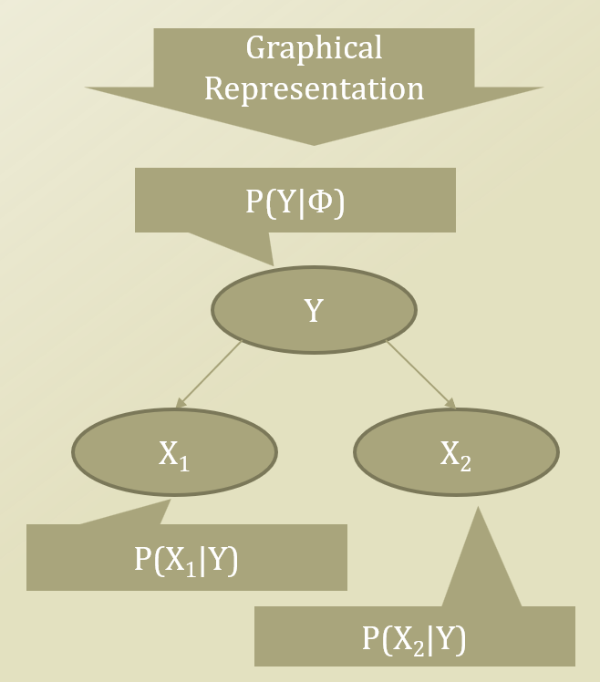
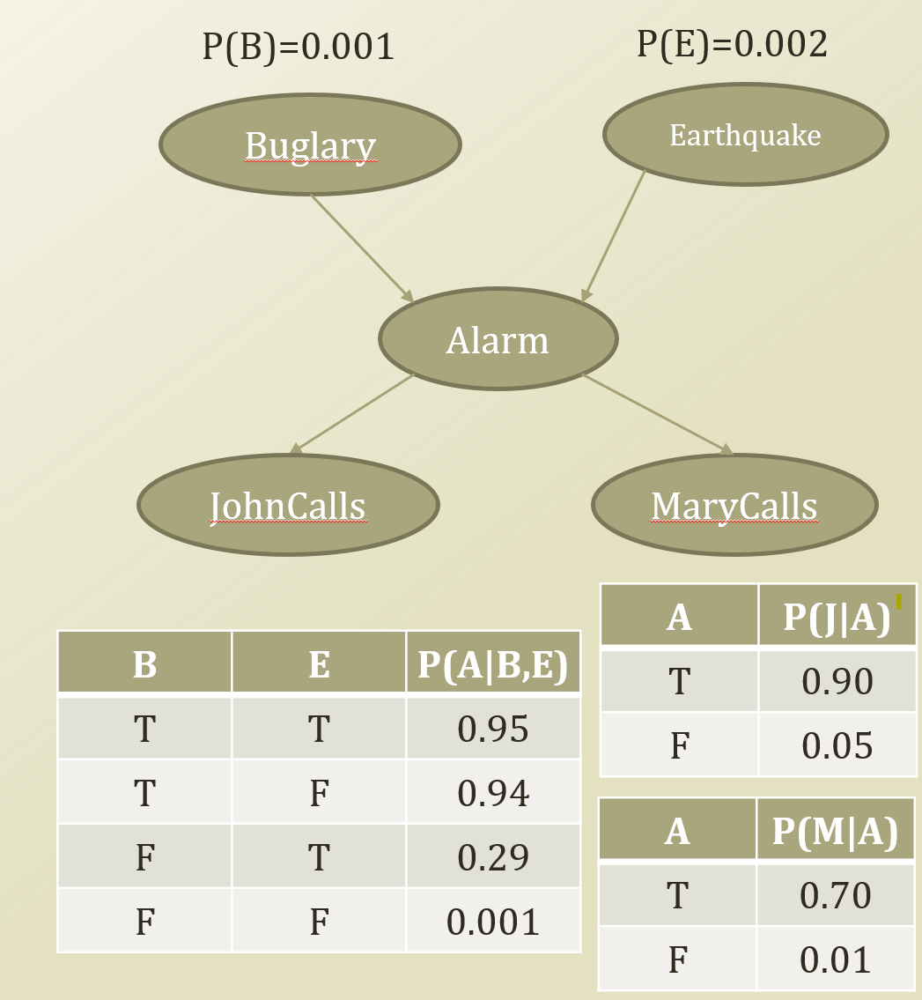
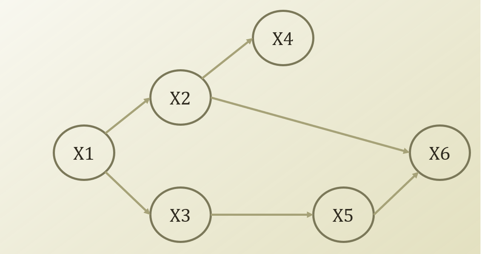
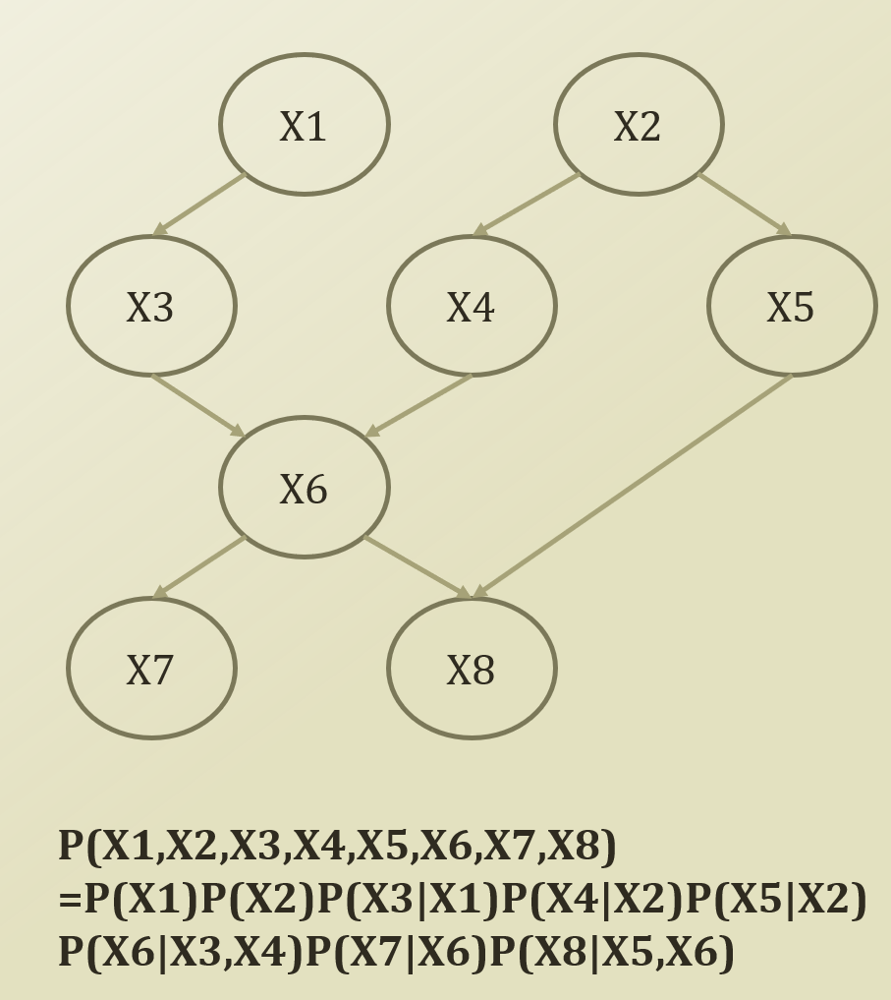

베이지언 네트워크란…
베이지언 네트워크는 확률적 그래픽 모델의 한 종류로, 변수 사이의 조건부 확률 관계를 그래픽으로 나타낸 것입니다. 이 모델은 주로 불확실성이 있는 상황에서 의사 결정을 지원하거나, 복잡한 데이터셋에서 의미 있는 패턴을 발견하는 데 사용됩니다.
베이지언 네트워크는 방향성 비순환 그래프(Directed Acyclic Graph, DAG)로 표현되며, 그래프의 노드는 확률 변수를, 간선은 확률 변수들 사이의 확률적 의존성을 나타냅니다. 그래프의 간선이 화살표로 표시되는 이유는 한 변수에서 다른 변수로의 ’방향성’을 나타내기 위해서입니다.
베이지언 네트워크의 핵심 아이디어는 조건부 독립성을 이용하는 것입니다. 즉, 어떤 변수가 주어졌을 때 다른 변수들 사이의 독립성을 모델링합니다. 이러한 독립성 가정은 모델의 복잡성을 크게 줄여주며, 그 결과로 효과적인 추론과 학습이 가능해집니다.
이러한 특성 때문에 베이지언 네트워크는 다양한 분야에서 활용됩니다. 예를 들어, 의료 분야에서는 질병의 원인을 파악하거나 증상으로부터 진단을 내리는 데 사용되며, 인공지능 분야에서는 로봇의 추론 시스템이나 자연어 처리 등에서 사용됩니다.

위의 예시와 같이 각 노드들에 대해서 Parents 노드가 Given 되었을 때 Child 노드의 확률과 같이 표현됩니다.
조금 더 구체적인 사례로 베이지언 네트워크의 구조에 대해 알아봅시다.
베이지언 네트워크의 구조

다음과 같은 베이지언 네트워크를 고려해봅시다. 알람은 도둑/지진에 영향을 받고, 존과 메리의 전화는 알람에 받는 베이지언 네트워크 구조입니다. 간단하게 보이는 네트워크이지만, 이 네트워크는 베이지언 네트워크의 모든 기본 구조를 가지고 있습니다.
베이지언 네트워크의 기본 구조는 다음과 같습니다.
- Common Parent : 존/메리의 전화가 알람의 영향을 받는 부분입니다. 알람이 given일 때, 존과 메리의 전화는 독립입니다.
- Cascading : 도둑 -> 알람 -> 존의 전화로 연결되는 부분입니다. 알람이 given일 때, 도둑과 존의 전화는 독립입니다.
- V-Structure: 도둑/지진과 알람의 관계입니다. 알람이 given일 때, 도둑과 지진은 의존적입니다.
좀 더 복잡한 문제로 독립/의존을 판별해 봅시다.

위의 사례에서, X2가 주어질 때, X1과 X4는 독립입니다. X1이 주어질 때, X2와 X5는 독립입니다.
Markov Blanket은 특정 노드가 독립일 조건을 만족시키는 노드의 집합입니다.
가령, A 노드가 독립이기 위해서는 A노드의 부모, 자식, 자식들의 다른 부모들이 Markov Blanket에 해당됩니다.
부모의 경우 Common parent 구조에 의해, 자식의 경우 Cascading 구조에 의해, 자식들의 다른 부모들의 경우, V-structure에 의해 이를 만족하는 것을 확인할 수 있습니다.
베이지언 네트워크의 Factorization
처음 베이지언 네트워크를 설명할 때, 각 노드들은 Parents 노드가 Given 되었을 때 Child 노드의 확률이라고 했습니다.
일반적인 경우에서 \(P(X1,X2,X3,X4,X5,X6,X7,X8)\)을 구하려면 많은 parameter가 필요하나, 네트워크를 활용하여 아래와 같이 간략히 표현할 수 있습니다.
